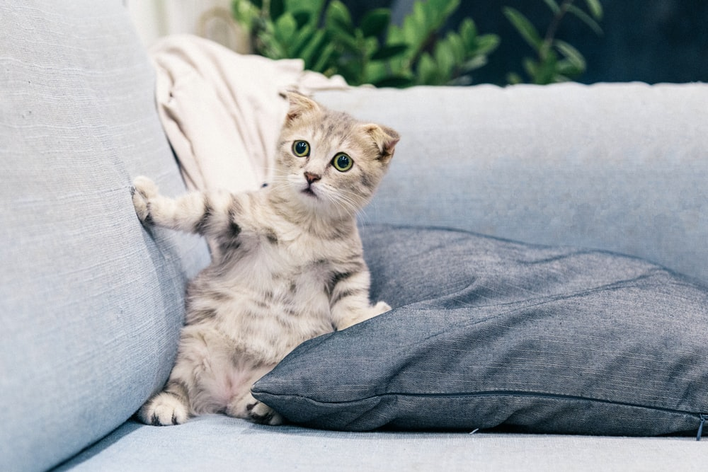
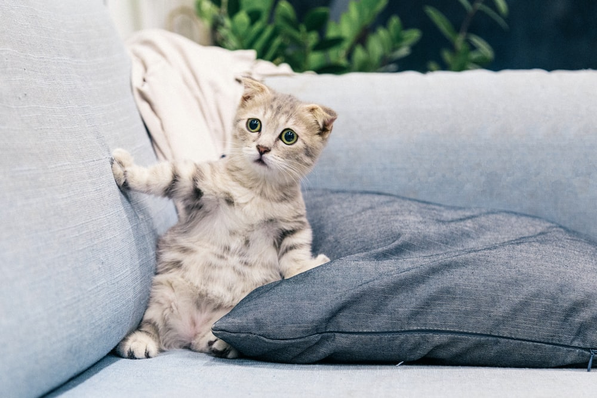

Cats were first domesticated around 7500 BCE in the western Asia region and are currently the second most popular domestic pet in the United States.
While there are over 60 unique documented cat breeds, care and diet can differ between breeds.
However, some diets and practices are generally recommended for the well-being of your fluffy family member regardless of breed.
Zero to Four Weeks
It is important the queen (a term commonly used for a female cat that is either pregnant or nursing) directly nurse her young if possible.
Monitor your kitten’s growth closely to make sure its growth rate is progressing steadily.
If any kitten is not growing at a sufficient rate, a caretaker might need to feed the kitten directly either with a bottle or a feeding tube.
Some reasons why kittens might not gain weight appropriately include the following:
Too many other siblings are competing for mom's milk.
Gastrointestinal disease.
Environmental conditions such as extreme heat or cold, or unsanitary conditions.
Four Weeks to One Year
Kittens can start being introduced to soft wet kitten food typically around three to four weeks after birth.
According to the ASPCA, kittens at this age should eat half to one cup of dry kitten food or six to nine ounces of wet kitten food per day.
If your kitten has difficulties eating hard food, a small amount of water can be added to soften the food.
Cat food that is optimized for kittens provides the additional nutrients that are needed for growth, energy, and wellness.
Depending on the breed, your cat may have different dietary requirements. You should always consult with your veterinarian for recommendations.
One Year to Seven Years
This age is when kittens reach the cat stage and do not need as many nutrients. At this age, their level of activity decreases, and so does their metabolism.
It is not recommended to leave food out for the cats all day. Instead, provide food a couple times a day so they eat meals rather than snacking throughout the day.
This practice reduces the risk of obesity and other weight-related feline ailments.
Seven Years and More
Much like many living organisms, the body begins to deteriorate and experience a lot of changes.
Cats at this age should eat less fats and calories and more quality proteins. This means when you are purchasing packaged foods for your cat, look for food that states a particular protein (such as "salmon") and not just a category (such as fish).
This usually means they are byproducts, or combinations, of lesser quality proteins.

 
